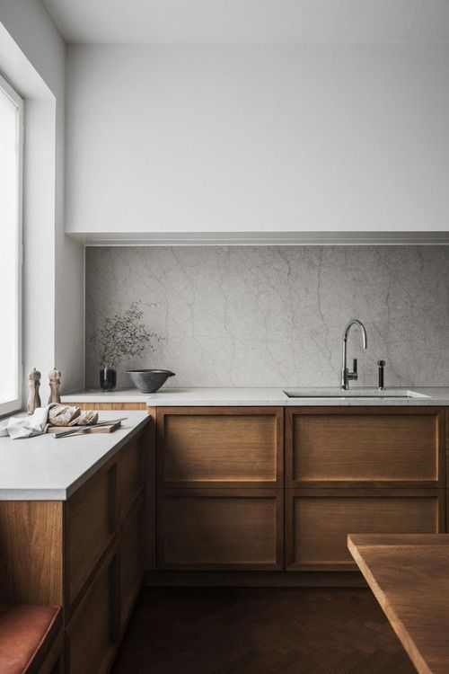
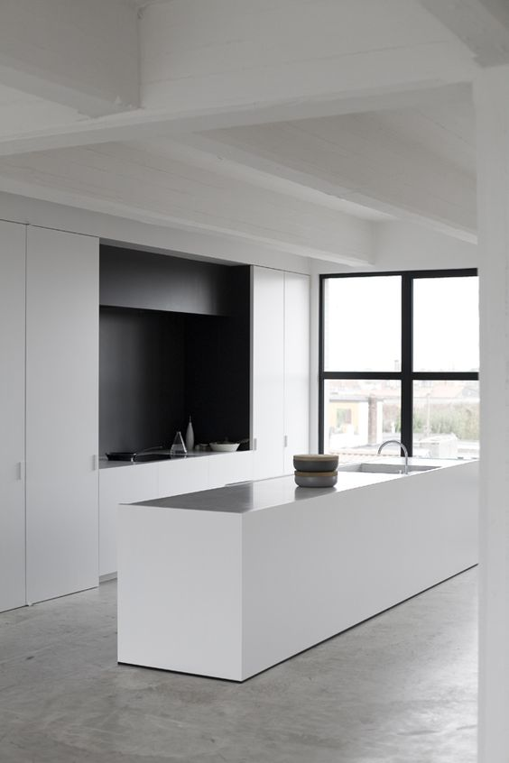
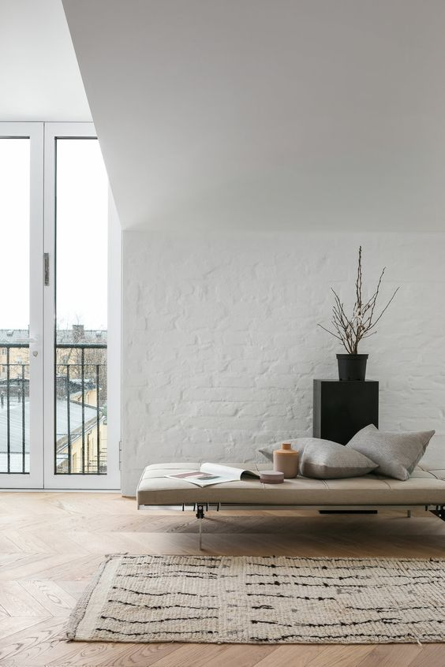

El minimalismo, en su ámbito más general, es la tendencia a reducir a lo esencial, a despojar de elementos sobrantes. Es una traducción transliteral del término inglés minimalism, o sea, que utiliza lo mínimo (minimal en inglés). Es también la concepción de simplificar todo a lo mínimo. El minimalismo queda más claro si se explica que minimalismo en realidad quiere decir minimismo. El término «minimal» fue utilizado por primera vez por el filósofo británico Richard Wollheim en 1965 para referirse a las pinturas de Ad Reinhardt y a otros objetos de muy alto contenido intelectual pero de bajo contenido de manufactura, como los «ready-made» de Marcel Duchamp. El término también se aplica a los grupos o individuos que practican el ascetismo y que reducen sus pertenencias físicas y necesidades al mínimo.


